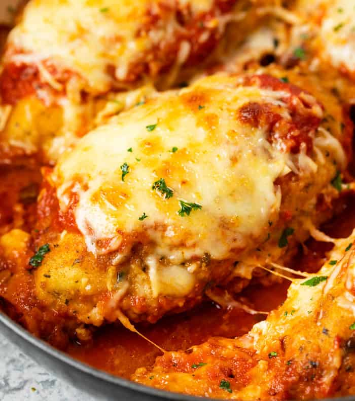
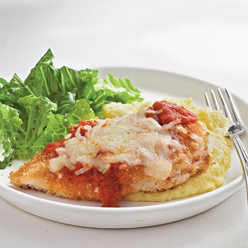

Pollo Empanizado ala Parmesana
Back to main

Make those chickens proud!
This is the best thing you could ever do with chicken. Scientists studied for millenias and all came to the same conclusion.
Let me teach you how to make the entire world around you happy to know you.
Ingredients
- Chicken breast or any chicken filet. Don't use pigeons, too many fleas.
- Fresh red tomatoes.
- Onion
- Garlic... All the garlic.
- Salt, black and white pepper, oregano.
- Mozarella cheese (and some cheddar if you got lying around.
- Eggs
- Breadcrumbs or bread powder
- Oil... Cooking Oil.
Steps
- Gotta make that sauce.
- Don't worry, it's easy. Mash the tomatoes and cook them in a pot with low heat for about an hour or so.
- Add seasoning, and some oregano as well as chopped garlic.
- Season the chicken with the spices listed, leave the oregano for later.
- Whip some egg in a bowl, and put another bowl next to it with the breadcrumbs.
- Dip the meat in the mixed egg, later place it on the breadcrumbs, flip it until the coverage is absolute. (Some people like to add crushed doritos or whatever here, that's insane but works.)
- In a pre-heated pan, with your cooking oil of choice, place the chicken and let it cook in low flame, don't want any of that salmonella in your delicious meal.
- Once it's golden on both sides, this is where it gets fun, get a spoonful of that delicious marinated tomato sauce and splash that chicken, don't be shy, splash it good.
- Doesn't end there...ADD THE CHEESE on top and cover the pan with a lid. Make sure you're low-heating this, don't go pyro.
- When you see that the cheese is melted, it's ready. You're ready. The world is ready.
Most people like to accompany this with white-sauce pasta, not bad, but my pick is with mashed potatoes. Nothing like wrestling that chicken with the potatoes. Delicious.
MASH IT UP!
